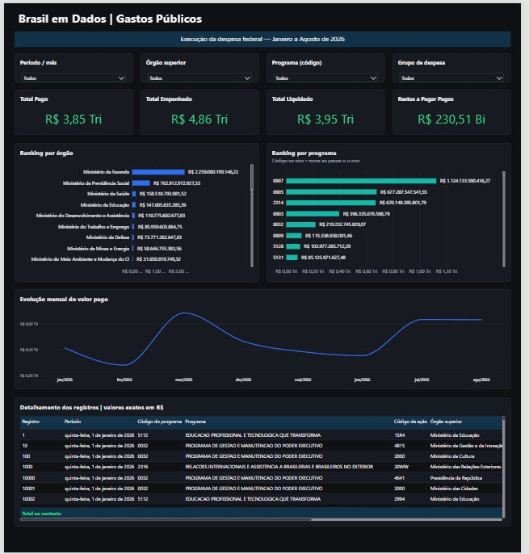
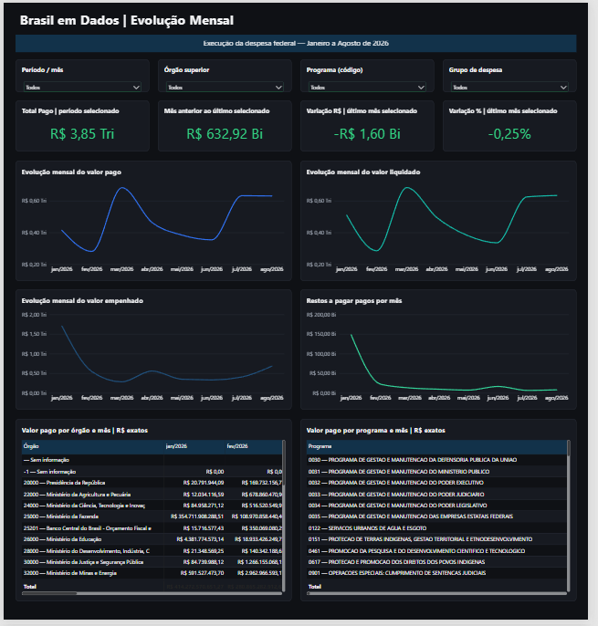
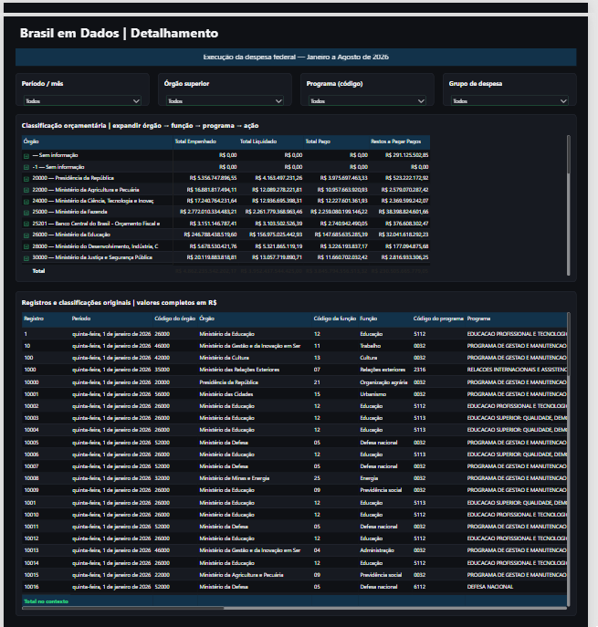

01
Visão Geral
Indicadores financeiros, rankings por órgão e programa e evolução mensal do valor pago. Uma visão da composição dos pagamentos no período selecionado.
Abrir imagem no tamanho original ↗{kind=link}

PORTFÓLIO · ANÁLISE DE DADOS
Dos arquivos públicos à análise interativa da despesa federal.
Transformei dados do Portal da Transparência em uma base organizada e um dashboard para explorar pagamentos, órgãos e programas ao longo de oito meses.
JANEIRO — AGOSTO / 2026
01 / PONTO DE PARTIDA
Tive a ideia deste projeto para aplicar meus conhecimentos em SQL e análise de dados. Também usei Python, DuckDB e Power BI para organizar as informações e construir o painel.
Preferi trabalhar com dados públicos reais em vez de dados fictícios. Escolhi os arquivos de despesas federais do Portal da Transparência, desde a leitura dos ZIPs até a conferência dos resultados.
02 / DESENVOLVIMENTO
Usei os 48.519 registros de janeiro de 2026 para entender o arquivo, tratar os campos, criar consultas e montar a primeira versão do dashboard.
Testei a carga, as medidas financeiras e as agregações. As reconciliações da etapa inicial apresentaram diferença de R$ 0,00.
Depois das validações, expandi a análise até agosto de 2026: 495.572 registros, evolução mensal e comparação entre períodos.
Validar primeiro em uma base menor. Só então ampliar o processamento.
03 / JANEIRO A AGOSTO DE 2026
Valores arredondados para apresentação. Empenho, liquidação e pagamento são etapas distintas e não devem ser somados entre si. Restos a pagar pagos permanecem separados. A base mantém centavos e valores negativos.
04 / O PAINEL
Três perspectivas sobre a mesma base. As imagens abaixo são capturas estáticas; os filtros e as interações estão disponíveis no projeto Power BI.
Indicadores financeiros, rankings por órgão e programa e evolução mensal do valor pago. Uma visão da composição dos pagamentos no período selecionado.
Abrir imagem no tamanho original ↗
Pagamentos, empenhos, liquidações e restos a pagar ao longo dos meses. Inclui mês anterior, variação mensal e matrizes de órgãos e programas.
Abrir imagem no tamanho original ↗
Navegação pela hierarquia de órgão, função, programa e ação, com acesso às classificações e aos valores completos dos registros.
Abrir imagem no tamanho original ↗
05 / FERRAMENTAS
Leitura dos arquivos, tratamento, consultas e exportação da base analítica. Códigos são preservados como texto e valores monetários são tratados com precisão decimal.
06 / CONFERÊNCIA
Antes de ampliar o período, conferi o carregamento, as medidas e as agregações com testes automatizados e reconciliações. Em janeiro, a soma dos programas correspondeu ao total pago, com diferença de R$ 0,00.
A expansão para oito meses incluiu a conferência do consolidado e do modelo multimensal no Power BI Desktop. Os gráficos principais e o funcionamento do painel foram verificados no aplicativo.
{kind=link}
{kind=link}